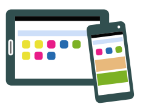

Ionic Framework
Ionic is the beautiful, free and open source mobile SDK for developing native and progressive web apps with ease.
- Cordova CLI: 6.4.0
- Ionic Framework Version: 2.0.0
- Ionic CLI Version: 2.2.1
- Ionic App Lib Version: 2.2.0
- Ionic App Scripts Version: 1.0.0
- OS: Linux 4.4
- Node Version: v6.9.4
Vamos começar as coisas com ionic, né?
Se você nunca desenvolveu para mobile, talvez esse guia seja de grande ajuda. Uma das perguntas que você pode estar a se fazer é: O Ionic é a melhor opção? A resposta é NÃO! O Ionic não consegue aproveitar os recursos dos dispositivos Mobile como os Aplicativos Nativos. O que significa que se seu interesse está no melhor desempenho possível, o Ionic, infelizmente, não é a resposta.
E por quê eu deveria utilizar Ionic?
Bom, a princípio, por praticidade. O Ionic vai permmitir que com apenas 1 codebase, você compile aplicativos para os principais sistemas operacionais do mercado. Um outro ponto positivo, se você é programador web, é que você não vai precisar aprender nada novo, Ionic é Web App, e utiliza TypeScript, HTML5, SCSS e Angular.

E por onde começar?
Primeiro você vai ter que instalar algumas coisas. E você que não instale não... Ó o link.
Instalados, você vai chegar no terminal e lançar:
$ npm install -g cordova ionic
O `-g` vai instalar o ionic e o cordova globalmente, mas você pode instalar apenas no repositório do projeto, removendo o `-g`.
OLHE, você leia com atenção a documentação do npm, ou isso pode custar muito caro... Ninguém quer formatar o PC quando está prestes a descobrir um novo mundo, não é? Fica a dica.
DICA: Se você tiver que dar `sudo npm -g install ionic`, você deve ter feito algo errado, e vai ter um pouco de dor de cabeça. O correto é chegar no fim, e não precisar de sudo para executar instalações com npm.
É hora do SHOW!
Ambiente de desenvolvimento devidamente configurado, precisamos iniciar o nosso projeto. Se segura.
$ ionic start --v2 myApp sidemenu
O que é isso?
Ué, `ionic start` é o comando para iniciar o projeto, `--v2` é a versão do ionic que você vai utilizar, 'myApp' é o nome do novo aplicativo, e `sidemenu` é o template base que estamos adotando.
E PRONTO. É isso mesmo que você ouLeu!
$ cd myApp
$ ionic serve
Contemple esse aplicativo que está vivo no seu navegador. HEHE. Agora se ligue, eu recomendo que você utilize o Google Chrome para auxiliar nos testes. Daí, se ele não for o seu navegador padrão:
$ ionic serve -w google-chrome
E essas pastas todas?
O importante é que a gente vai trabalhar com o conteúdo da pasta src. Em src encontramos nosso código bruto, não compilado. Quando executamos ionic serve, nosso código dentro de src é compilado para a versão de Javascript e CSS que os navegadores entendem. E aí podemos trabalhar em um nível mais alto usando TypeScript e SCSS ou SASS, mas compilar para baixo.
app - Merece uma atenção especial.-
pages - Guarda as páginas do sistema, segmentadas por pasta. Cada pasta pode representar um conteúdo de página composto por um arquivo typeScript (ts), um arquivo scss, e um arquivo html.
theme - Guarda o arquivo variables.scss, onde ficam as variáveis de estilo superglobais do seu aplicativo, tais como as variáveis de cor.
O que é que a app tem?
A app é uma espécie de repositório de configuração.
O app/module.ts é o portão de entrada, pae. Todas as páginas devem ser declaradas nesse arquivo, como no modelo que foi gerado quando você criou o app. Aqui definiu-se o component root como sendo a classe MyApp que se encontra em app.component.ts;
O app/app.component.ts é a primeira coisa que vai ser carregada no seu aplicativo. Entao se você quiser que alguma coisa execute primeiro, essa coisa deve ser escrita aqui. Como por exemplo, a configuração dinâmica do menu. Por falar em menu, ele está no arquivo app/app.html no nosso exemplo. O app/app.html é o template do nosso app.component.
E se eu quiser criar qualquer página aí, eu posso?
Pode.
$ ionic g page home
Aí veja os arquivos gerados em src/pages. Você vai tornar sua nova página ativa adicionando-a ao arquivo app.module.ts, e a referência para isso será o nome da classe de home.ts
...
4. import { HomePage } from '../pages/home/home';
...
Depois adicione-a à lista de declarations.
8. declarations: [
9. ....MyApp,
10.....HomePage,
11.],
E à lista de entryComponents.
17.entryComponents: [
18.....MyApp,
19.....HomePage,
20.],
Agora que sua página realmente existe...
Vamos adicioná-la ao menu.
Lá no seu app.component.ts, adicione a página.
...
4. import { HomePage } from '../pages/home/home';
...
Depois repare que na própria app.component.ts existe uma lista de objetos chamada pages dentro do construtor. Experimente adicionar a HomePage nessa lista, e repare que na app.html tem um bloco com algo muito interessante. Algo como:
*ngFor="let p of pages" (click)="openPage(p)"
O for está percorrendo a variável pages do app.component? SIM! E a openPage é uma função que foi declarada lá. Bom, analise o código da app.component.ts e da app.html e tire suas conclusões. Veja o código das páginas de exemplo também.
A documentação do Ionic tem um mundo de possibilidades para você montar seu App. Analise com atenção, ela é bem simples e intuitiva. ;)
E aí, a introdução ao Ionic é isso aí.
Esse guia não substitui de maneira nenhuma a documentação oficial do Ionic Framework.
ionicframework.com/docs/